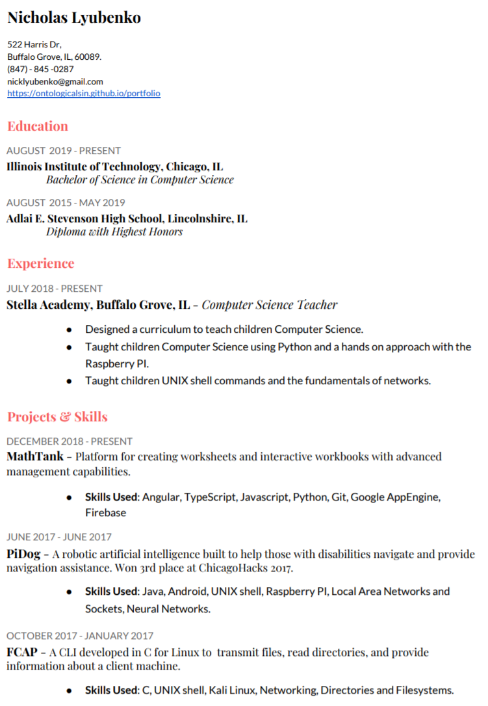

522 Harris Dr,
Buffalo Grove, IL, 60089
(847) - 845 -0287
nicklyubenko@gmail.com
522 Harris Dr,
My PortfolioAUGUST 2019 - PRESENT
Illinois Institute of Technology, Chicago, IL
Bachelor of Science in Computer Science
AUGUST 2015 - MAY 2019
Adlai E. Stevenson High School, Lincolnshire, IL
Diploma with Highest Honors
JULY 2018 - PRESENT
Stella Academy, Buffalo Grove, IL - Computer Science Teacher
DECEMBER 2018 - PRESENT
MathTank - Platform for creating worksheets and interactive workbooks with advanced management capabilities.
Skills Used: Angular, TypeScript, Javascript, Python, Git, Google AppEngine, Firebase
JUNE 2017 - JUNE 2017
PiDog - A robotic artificial intelligence built to help those with disabilities navigate and provide navigation assistance. Won 3rd place at ChicagoHacks 2017.
Skills Used: Java, Android, UNIX shell, Raspberry PI, Local Area Networks and Sockets, Neural Networks.
OCTOBER 2017 - JANUARY 2017
FCAP - A CLI developed in C for Linux to transmit files, read directories, and provide information about a client machine.
Skills Used: C, UNIX shell, Kali Linux, Networking, Directories and Filesystems.
